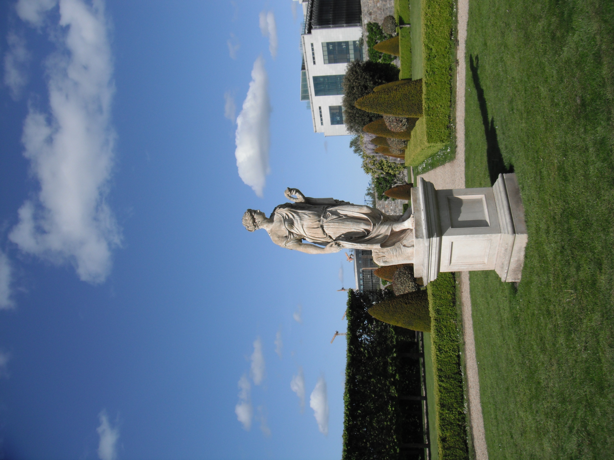

I visited the IMMA twice during my trip. I kept arriving an hour or so before close, and I still haven't seen all of the Museum. I also kept forgetting to take photos, so this page may be a little bare :( There's lots to explore, with 3 galleries, an outdoor garden, two cafes, and a gift shop.
Over the course of my visits, I saw the Fisherwoman, Fisherwoman; Art as Agency; and Sunflowers exhibits
